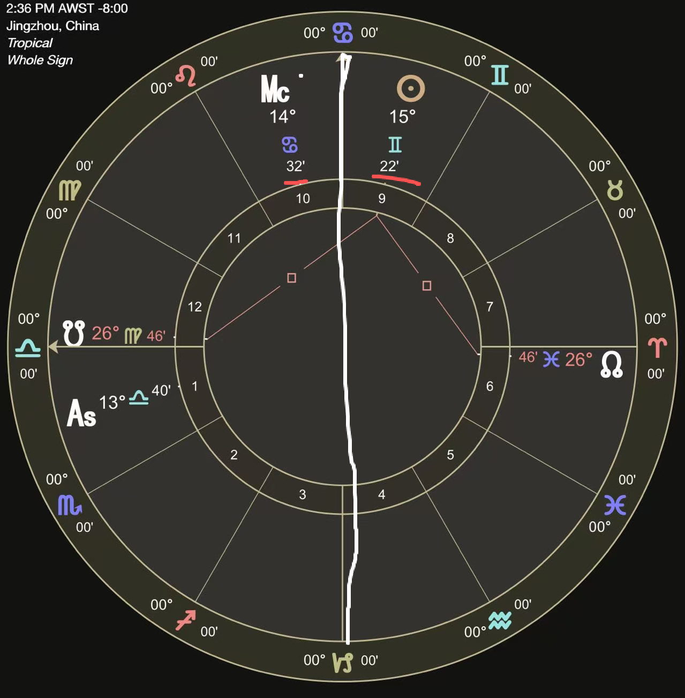
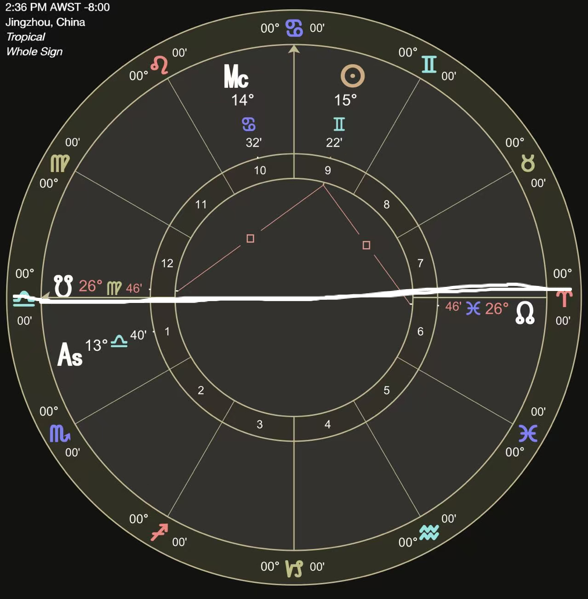
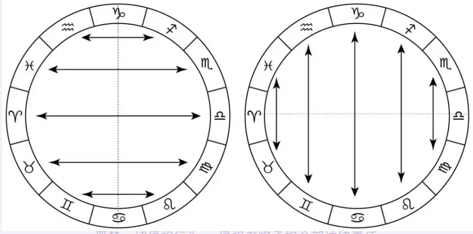
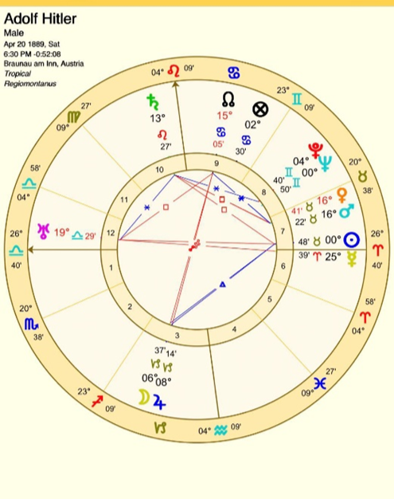
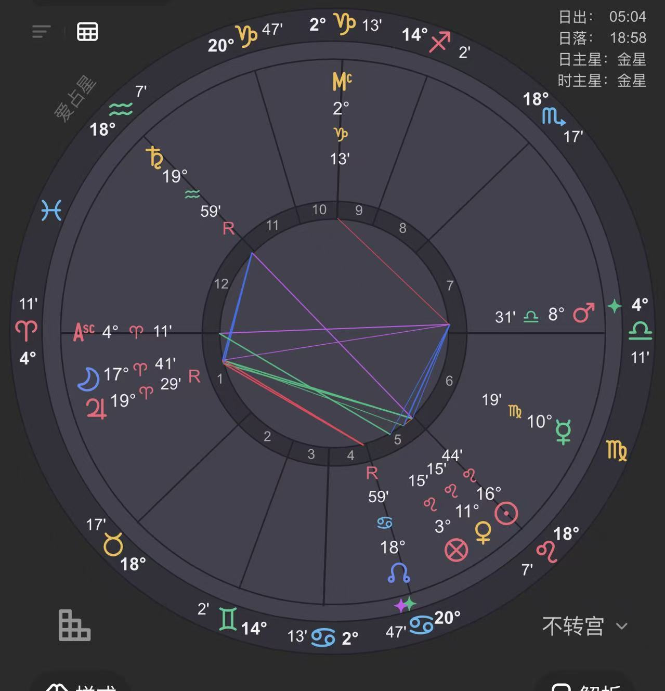
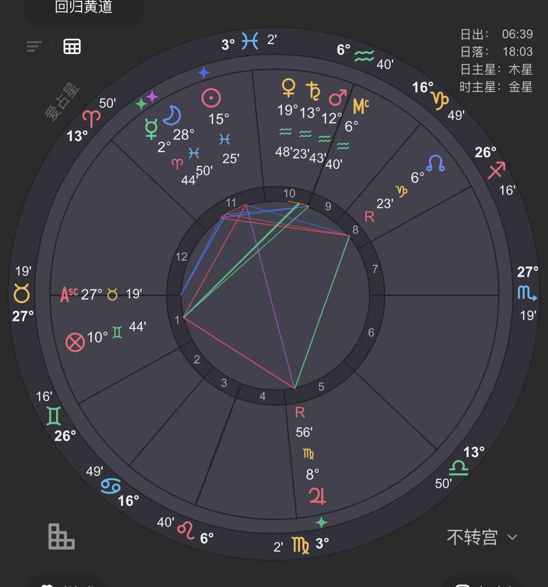
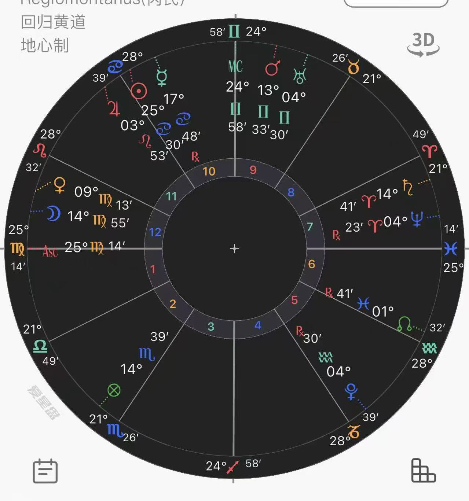

astrology阴暗爬行系列之 映点
HELLO 小满来炒冷饭了…今天是一个古典占星里老生常谈的知识点 映点（Antiscia）和反映点（Contra-antiscia）…早在六年前就写过一篇关于这个的 今天再来一次更详细的！ 因为真的太好用了 好用到我一直不理解为什么现代占星几乎把这个概念弄丢了..所以好多喜欢占星的人也不了解这是....真的好可惜。..但是！如果你跟小满一样是个老阴杯 喜欢深挖信息.. 那么你也会跟小满一样喜欢映点 一拿到盘就到处找映点 在卜卦的时候就能大SHOW技法 本命的时候也能把人底裤都扒出来 然后案主就会惊呼 好准啊！(误
枯燥的东西一定要先讲.. 搞懂底层逻辑才能运用得巧妙~
映点的基础就是一条线：0°巨蟹——0°摩羯轴，也就是至点轴（Solstice Axis）
在黄道中，以夏至点（巨蟹座0°）和冬至点（摩羯座0°）为中轴，把黄道分两半，如果有任意两颗星体和这条轴的距离相等，它俩就互为映点。

原理是 夏至那天当太阳走到巨蟹0°的时候，白昼最长。冬至那天太阳走到摩羯0°，白昼最短。这两点就是日照长度的两个极端。
那可以延伸一下..打个比方，太阳在双子10°，距离夏至点（巨蟹0°）差20°对吧，太阳在巨蟹20°，距离夏至点也差20°。这两个日期——一个春末，一个夏至刚过——日照时长是完全相等的。
这就是映点最底层的逻辑：在至点轴两侧等距的位置，两个位置的白昼时长相等，夜晚时长也都一样，托勒密称之为"力量相等"。
"the parts which are equally removed from the same tropical sign are of equal power, because when the sun comes into either of them the days are equal to the days, the nights to the nights." [3]
他说的"equal power"指的是 至点轴两侧等距的度数具有相等的力量——虽然当时他没有直接用"antiscia"这个词，是后来到了四世纪，Firmicus Maternus才正式命名为"antiscia 映点"并系统地写成技法。所以这就代表力量相同 宛如照镜子 ，一颗星的力量和代表的事物会通过另一颗星显现出来，但他们又没有直接的相位关系 所以有时候也就代表了悄咪咪联系的含义.....
反映点的秘密
讲完映点，反映点就很好理解了~
反映点（Contra-antiscia）的对称轴换了一组——0°白羊——0°天秤轴，也就是分点轴（Equinox Axis）：一侧的白昼等于另一侧的夜晚。所以能量性质跟映点的直接映射不太一样，反映点带了一点对抗的张力。

一个重要的澄清：映点 ≠ 赤纬平行
这里有一个流传很广的误解，很多人在网上会看到说 映点就是"同一赤纬"，就是说两颗行星在赤道南北 有相同的赤纬角度。
这个说法不对的..
Deborah Houlding澄清过 [4], 她指出传统映点是从黄道上的至点轴测量的，基于的是日照时长相等，不是赤纬相等。赤纬平行是从赤道测量的概念，涉及的是天球赤道坐标系，跟黄道坐标系是不一样的
只有太阳的路径被约束在黄道上——因为太阳没有黄纬——所以太阳的映点位置恰好对应相同的赤纬。但其他行星全都有黄纬，比如金星、火星、木星们都在黄道带上上下下地晃..它们走到同一赤纬位置时，在黄道上的度数并不是精确的映点关系。
这个错误是从哪里来的呢？Nicholas de Vore在他的《占星百科全书》里直接把映点定义成了"同一赤纬"。这本书后来传了好几代占星学生...所以错误永流传惹
那我们再简单上点历史课 关于映点概念的发展..
希腊化时期——概念的诞生
公元前二世纪，天文学家Hipparchus，就已经把至点轴两侧的等日照关系记录下来了..而最早留下文本记录的是公元前一世纪的希腊学者Geminos。他在《现象》里用了一个词：antiskian（αντίσκιαν），字面意思是"投射相反的影子"。他还说处于这种关系的星座处于一种叫 syzygy（合体连接）的状态。注意：syzygy 也是朔望月 在占星里代表出生前朔望月，也叫 SAN，是你出生前最后一次新月或满月的度数，可以用来算 Hyleg 和受孕盘的... Geminos 在这边用的是词源本义——不指朔望月，不要混起来了..
到了公元一世纪，Manilius在他的《Astronomica》里描述了一些星座之间有特殊关系——他说某些星座"看见"（videntia）另一些星座，而另一些星座"听见"（audientia）它们 [7]。"看见"的星座组以巨蟹-摩羯至点轴为对称中心，比如双子座和狮子座互相看见，这正是映点的早期雏形；"听见"的星座组以白羊-天秤分点轴为对称中心，对应后来的反映点。是不是很熟悉...就是"互视星座"和"互听星座啦！只是后来随着岁差的发现 和回归黄道的采用，至点轴从早期的 15° 巨蟹移到了 0° 巨蟹。就变成了如今的映点

然后真正把映点系统使用在论命技法里的，是四世纪的Firmicus Maternus。
映点技法部分：
Maternus在《八卷本占星论》认为
"And so, if any stars do not aspect each other in the orderly arrangement of the nativity, it must be inquired whether they are connected to each other by the associated aspect of antiscions. For when they have sent their antiscions thus, they are connected with each other through their antiscions just as [much as] by a trine or square or opposition or sextile aspect. Thus, they denote [whatever they would] as if they were placed thus in the simple arrangement; and thus everything is complete by that kind of mixture. Because, when you have done this, you will be able to discover very easily everything that is sought in the fates of men."
差不多意思就是 如果星盘中的某几颗星没有相互形成任何相位，你应该检查它们是否通过映点建立了连接。因为当它们通过映点连接时，其效果和六分、四分、三分或对分相位完全一样，就会发现万事万物便藉由这种混合方式得以完满从而探索到很多信息
后来Bonatti把映点也正式整合进了本命和卜卦的判断流程中——当相位或接纳关系不明显的时候，映点就是补充证据 [13]。
再后来 William Lilly的《基督教占星学》出版了。他给出了解读的核心框架：
"As there are Antiscions, which of the good planets we think are equal to a sextile, or trine; so are there Contrantiscions, which we find to be of the nature of a square or opposition." [2]
所以映点相当于隐蔽的合相，看是什么星体，其状态和联动 好的话就是六分三分，比如吉星（木星、金星）的映点就像六分相或三分相——是帮忙的。反映点就像四分相或对分相——是带对抗的，代表事物一定的阻碍。
Lilly 称之为"秘密合相"（secret conjunction）.. 两颗星在星盘上看起来啥关系也没有，实际上在背后是有联系的..。就像那种你查聊天记录查不出任何东西，但所有人一看就知道不对劲的关系。"
但是Frawley在《卜卦占星教本》里给了映点大量篇幅，他说映点揭示的东西不一定叫"秘密"——它只是传统相位之外的一种连接方式。。就是可以多一个角度去看事情，甚至是应期的发生。具体读成什么，要看卦的整体语境
技法解析：怎么算，怎么看，怎么用
映点算法
以巨蟹-摩羯至点轴为对称中心，两两一组配队。。两侧星座互相对称的结果：
| 白羊座 | ↔ | 处女座 |
| 金牛座 | ↔ | 狮子座 |
| 双子座 | ↔ | 巨蟹座 |
| 天秤座 | ↔ | 双鱼座 |
| 天蝎座 | ↔ | 水瓶座 |
| 射手座 | ↔ | 摩羯座 |
巨蟹和双子是一对、狮子和金牛是一对等等..
算法：在配对星座的星星的距离加起来是30度就好
举三个栗子🌰：
- 处女座14°25' → 映点星座是白羊座 → 30° - 14°25' = 15°35' → 映点 = 白羊座15°35'
- 天蝎座27°03' → 映点是水瓶座 → 30° - 27°03' = 2°57' → 映点 = 水瓶座2°57'
- 狮子座20°35' → 映点是金牛座 → 30° - 20°35' = 9°25' → 映点 = 金牛座9°25'
反映点算法——映点的对分点
同样也是加起来30度。
处女座14°25' → 参考表格，反映点是天秤座→ 30° -14°25' =15°35' =天秤座15°35'
反映点的配对表：
| 这边 | ↔ | 反映点那里 |
|---|---|---|
| 白羊座 | ↔ | 双鱼座 |
| 金牛座 | ↔ | 水瓶座 |
| 双子座 | ↔ | 摩羯座 |
| 巨蟹座 | ↔ | 射手座 |
| 狮子座 | ↔ | 天蝎座 |
| 处女座 | ↔ | 天秤座 |
容许度
容许度各家说法不太一样。Lilly接受3°以内的反映点，但他明显对精确合相最有信心。传统实践一般1°以内比较靠谱。我个人建议3°-5° 当然越精准越好 如果宽泛的话 需要卦的背景和描述性去支撑可用性。
解读原则
第一条：映点就是隐藏的连接。 两颗星通过映点碰到一起，效果像"秘密合相"。它们在水下共振，表面看不出来。各种隐形的东西，秘密，第三者，卡阴等等...，其他跟秘密 幕后 背后有关，比如做的工作是幕后的 在背后操作的 等等。
第二条：吉星的映点是帮忙的。 木星、金星的映点接触相当于六分相或三分相——顺滑、支持 [2]。当然也要看整体格局 木星金星的尊贵力量和宫性等等而决定.. ，比如有的人没有一技之长 但是映点到一颗很好的木星 有可能就是说对方生活顺遂也不缺钱用。
第三条：凶星的映点是隐藏的麻烦。 土星、火星的映点相当于四分相或对分相——多了一个你看不到的冲突..很难解决放不到台面上的事情，
第四条：反映点比映点更有攻击性。 反映点强调的是反向和对抗感 有张力 ，比如问事情 看到反映点有可能是背后难解决的问题 ，或者有人背后不喜欢自己等等。但小满的经验下来反映点也不都是坏事，有时候只代表一些事情是不常规的 和他人不一样 所以有时候会经历到一些考验。
第五条：也不需要把映点看得太重要...先确定一个盘和卦的基本框架和方向 映点会是很好的补充
第六条： 映点链接格局，映点是照镜子或者可以理解为星星的分点 两颗星互为映点的会相互影响 像镜子一样照见彼此。
在卜卦中的用法
举个例子：问某件事能不能成，征象星之间零相位零接纳，但A星的映点刚好碰到B星。吉星的映点——大概率能成，只是过程不太透明。凶星的映点——表面能成，实际上有隐藏的障碍。
但是映点落在宫位内就没有什么意义，虽然过去的作者有的会这样用 但我反而会觉得是一件比较多余的事情，本命上或许可以参考， 但是卜卦尽量不看落在宫内的映点，不然会很杂乱 ，除非是和宫头合相，这是可以用的。
比如卜卦问对方喜不喜欢自己 对方的星体映点落在了自己的2宫头 代表对方很可能对自己的财务状况有兴趣但表面不说... 以及Firmicus表示过 某颗星的映点落在你的上升点度数上，意味着这颗星通过一个隐蔽通道直接影响你的人格呈现。 [1]。
前面我们提到过的互听互视星座在卜卦占星里也是很好用的哦 互听互视 因为是映点概念的前身 所以 在互听星座和互视星座的两颗星体也很矬... 实际的运用上 也代表听到一些八卦 或者视奸他人 或者别的含义 看卦的背景来灵活运用。
这里有相关案例欣赏~
案例环节
案例二：希特勒的土星映点

之前我在自己的文章里也写过这点 传送门
他的10宫内有一颗高挂着的土星 土火刑克，土星与金星(命主),火星(战争)有映点，他的月亮木星的定位星也是土星 所以这颗土星对他的事业领域有很大的影响土星星性=政治，权利，压迫。。土星落在狮子座狮子座同时也是狂野星座, 和王者星座, 所以有集权独裁, 领导的含义..然而土星也是4主 4宫也代表了族群 土地....
案例四：歌手Whitney Houston——大嗓门

Whitney的水星处女10°15'，木星白羊19°29'——精确映点关系。水星是声音和表达，在处女座响亮星座~木星落自己宫位 是扩展和放大在白羊座就是很有爆发力 。
案例四：SAM BANKMAN FRIED

此人上了forbes 400 41位，曾经市值 $260亿 ~ 他的2主水星和落在10宫事业宫的火星互溶 ，这颗水星和月亮之间有一个反映点关系。水星是 2 主，代表金钱，金融，资金，储蓄；月亮是 3 主，管网络、信息流、进进出出的流水。他是FTX 加密货币交易所创始人。反映点就应在 他的钱不走常规通道，而是以不常规的方式 在网络上流通。。这不就是加密货币嘛。反映点 = 隐藏的、非公开的连接。水星（钱）和月亮（网）通过反映点接触 → "钱在非公开的渠道里流动"，
当然他最后FTX一夜崩盘 市值归零...也包括这个反映点的张力 (当然还有盘里其他格局的支撑) ，然而他的事业本身就是跟 "加密货币有关"，这也很符合映点/反映点的含义了。。 后面他还因为诈骗入狱 人生起伏也是够大的 ，其实这个盘的格局还有很多可以聊的 比如盘的派系问题，10主被金火夹 而且这个月亮其实蛮不好的 位置非常的动荡，在但篇幅问题下次可以单独看一篇我们解格局~
案例五：horary问对方有没有备胎...

这个卦对方有没有备胎另说...也不是此篇的主题...
但我想说 明显案主自己也是有的 所以才来问...因为案主自己互溶了自己在12宫的月亮 而月亮和土星有个映点关系 土星在7宫可以代表另个人 土星同时也是5主，后来案主自己也承认是桃花比较多 有在养鱼...
案例六：医疗占星里的映点
在这里..第二个案例的传送门~
有点累了..今天就到这啊哈哈
References
[1] Firmicus Maternus, Matheseos Libri VIII (c. 334–337 CE), Book II, Chapters 29–30. English translation by James Herschel Holden, American Federation of Astrologers, 2011.
[2] William Lilly, Christian Astrology (1647), pp. 90–92. Reprinted by Astrology Classics, 2005.
[3] Claudius Ptolemy, Tetrabiblos (c. 150 CE), Book I, Chapters 14–15. English translation by F. E. Robbins, Loeb Classical Library, Harvard University Press, 1940.
[4] Deborah Houlding, "The Classical Basis of Antiscia and Contra-Antiscia," Skyscript, 2005. https://www.skyscript.co.uk/antiscia.html
[5] Nicholas de Vore, Encyclopedia of Astrology, Philosophical Library, 1947. (Contains the erroneous definition of antiscia as "parallel of declination.")
[6] Geminos, Introduction to the Phenomena (c. 70 BCE). English translation by James Evans and J. Lennart Berggren, Princeton University Press, 2006.
[7] Marcus Manilius, Astronomica (c. 10–20 CE). English translation by G. P. Goold, Loeb Classical Library, Harvard University Press, 1977.
[8] Dorotheus of Sidon, Carmen Astrologicum (c. 75 CE), Book IV. English translation by David Pingree, Teubner, 1976.
[9] Antiochus of Athens, The Thesaurus (c. 2nd century CE). In Robert Schmidt (trans.), The Astrological Record of the Early Sages, Project Hindsight, 1993.
[10] Abu Ma'shar, The Great Introduction to Astrology (c. 850 CE). English translation by Keiji Yamamoto and Charles Burnett, Brill, 2019.
[11] Al-Qabisi (Alcabitius), Introduction to Astrology (c. 950 CE). English translation by Charles Burnett, Keiji Yamamoto, and Michio Yano, Warburg Institute, 2004.
[12] Al-Biruni, The Book of Instruction in the Elements of the Art of Astrology (1029 CE). English translation by R. Ramsay Wright, Luzac & Co., 1934.
[13] Guido Bonatti, Liber Astronomiae (c. 1277 CE). English translation by Benjamin N. Dykes, Cazimi Press, 2007.
[14] John Frawley, The Horary Textbook, Apprentice Books, 2005.
[15] Elizabeth Hazel, "Judging Antiscia in the Natal Chart," lecture presented at United Astrology Conference (UAC), 2018.
[16] Christina Rodenbeck, "Antiscia — Origin and History," Astrodienst (astro.com). https://www.astro.com/astrology/in_antiscia_e.htm
[17] "Christina Onassis: Antiscia Case Study," astrological-mind.com.
[18] Kate Petty, "In Light of the Cardinal Axis," The Mountain Astrologer, 2022.